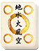
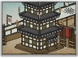

Requires
- Arts: 

Enables
- Buildings: 
Effects
- +1 experience for all spear-wielding recruits
Description
A true master knows the limits of his mastery, but will show others his stumbling steps on the path of wisdom. Even the greatest teacher must have somewhere to teach, and this art allows the construction of a yari master dojo. In turn, this allows the recruitment of exceptionally skilful spear-armed units capable of forming a nigh-impenetrable spear wall. Few enemies can break through such a formation in battle.
The spear has a special significance in Japanese mythology. Once Heaven and Earth had been created out of chaos, the deities Izanagi and Izanami came into being and created the islands of Japan. Standing on the "floating bridge of heaven" they dipped a magical spear into the ocean below. From its tip an island was formed. It was here that the couple were married and consummated their relationship. Izanami then gave birth to all the islands of Japan and a number of other deities. Two large rocks, Izanami and Izanagi, can still be found just off the coast near Ise. They are bound together by a rice-straw rope, symbolising the bonds of marriage between the deities who created the islands of Japan.